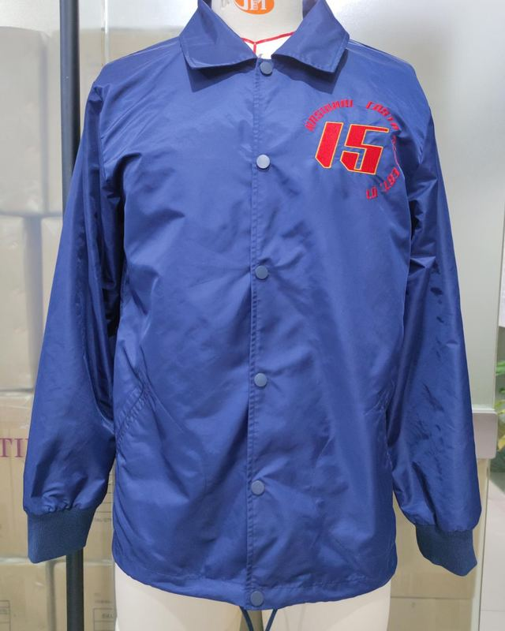
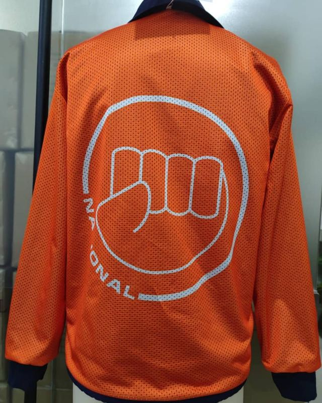
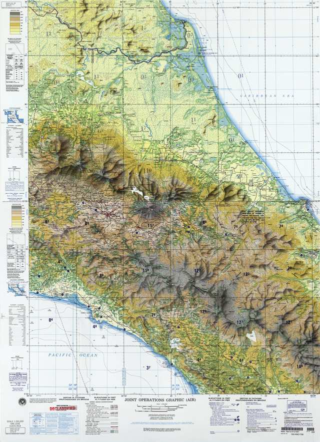
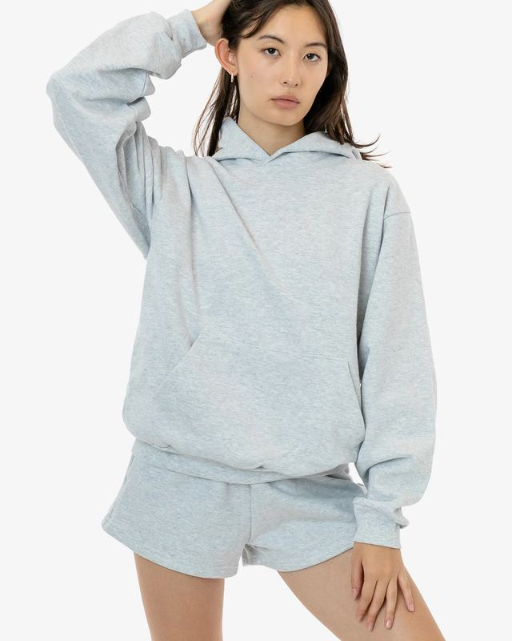
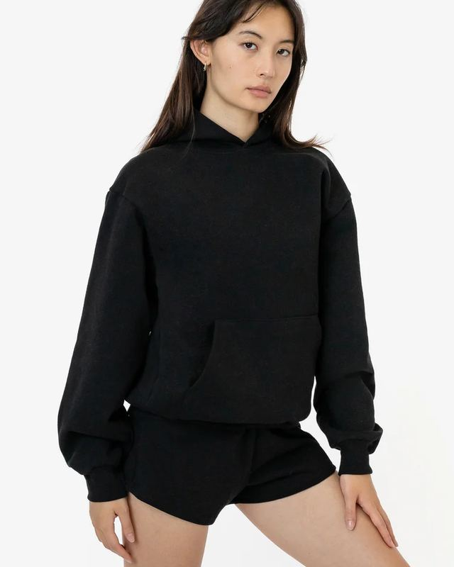
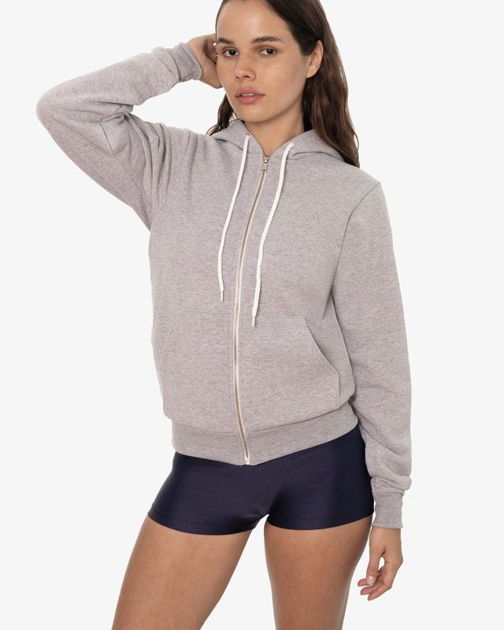
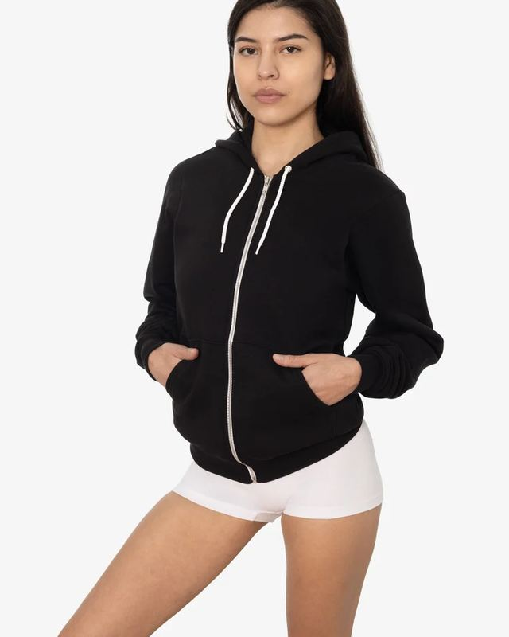
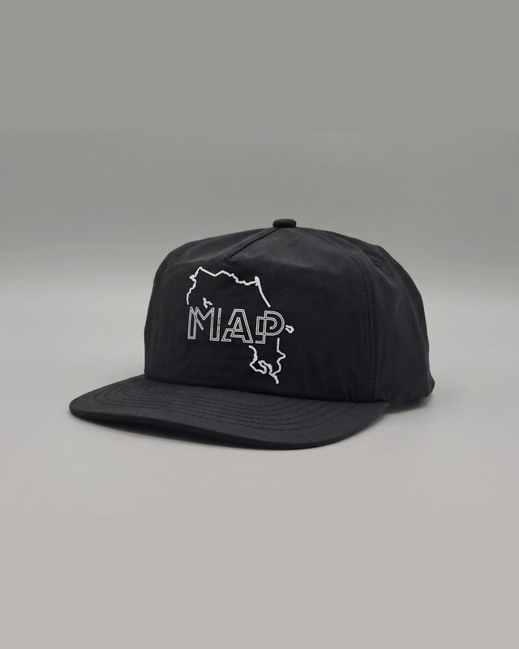

Coach jacket
La pieza ancla. Cien hechas para Nasional, cien vendidas.
En el taller

Perturbaciones magnéticas locales afectan la confiabilidad de este instrumento
Las secciones del sitio y los territorios de MAP, para quien prefiere leer la carta antes que mover perillas.
Carta: Joint Operations Graphic (Air), serie 1501 Air, hojas NC 17-5 Alajuela y NC 17-9 San José, Costa Rica, escala 1:250.000. Perry-Castañeda Library Map Collection, University of Texas at Austin. Instrumento al cuidado del Dr. Arkadi Volkóv Lasenko.
Una historia de cantina, una banda que hay que grabar, un patinador que nadie ha documentado, una pregunta por la merch que todavía no existe. Esta frecuencia recibe todo.
Piezas en el taller. Pocas, bien hechas y pensadas para el calor y la lluvia de este país. Apúntese y le avisamos primero cuando salgan.


La pieza ancla. Cien hechas para Nasional, cien vendidas.
En el taller

Unisex. Gris jaspeado y negro.
En el tallerFoto: Los Angeles Apparel

Unisex. Gris jaspeado y negro.
En el tallerFoto: Los Angeles Apparel
Tela liviana, aire retro. El mapa de Costa Rica al frente.
En el tallerDocumentales, series, podcasts, registro de bandas en vivo y gráfica. Todo lo que suena en esta carta salió de aquí; el sitio entero es el portafolio.
La segunda temporada de la Serie MAP busca patrocinio. Las marcas que la acompañen quedan en los créditos y en la carta.
Instituto Cuántico Costarricensepara la Investigación InterdimensionalCalibre antes de cada marcación